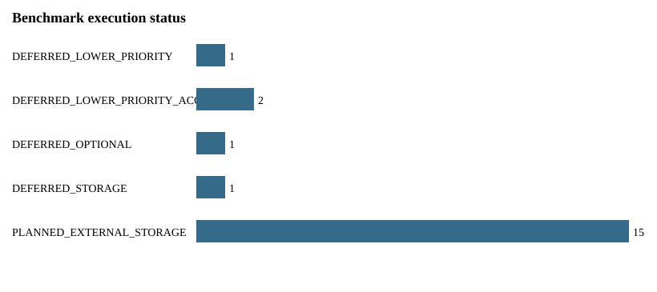

Overall status: PARTIAL_VALIDATION_DEFERRED_EXTERNAL_STORAGE
This report keeps truth-bearing accuracy, caller concordance, platform/protocol effects, replicate reproducibility, depth, support thresholds, quantification, differential execution, simulation, and resources separate. It does not compute a global score.
Selected full WTC11 data: 55,589,959,267 compressed bytes. Estimated total local footprint: 611,489,551,937 bytes. Available at audit: 46,352,101,376 bytes. Decision: FULL_LOCAL_EXECUTION_DEFERRED_STORAGE.
| dataset_id | experiment_accession | file_accession | platform | library_protocol | biological_replicate | benchmark_role | local_execution_status |
|---|---|---|---|---|---|---|---|
| wtc11_ont_cdna_rep1 | ENCSR539ZXJ | ENCFF263YFG | ONT | cDNA size-selected 600-5000 nt | 1 | SIRV truth; caller; platform/protocol; replicate; depth; support | FULL_DEFERRED_STORAGE |
| wtc11_ont_cdna_rep2 | ENCSR539ZXJ | ENCFF023EXJ | ONT | cDNA size-selected 600-5000 nt | 2 | SIRV truth; platform/protocol; replicate | FULL_DEFERRED_STORAGE |
| wtc11_ont_cdna_rep3 | ENCSR539ZXJ | ENCFF961HLO | ONT | cDNA size-selected 600-5000 nt | 3 | SIRV truth; platform/protocol; replicate | FULL_DEFERRED_STORAGE |
| wtc11_pacbio_cdna_rep1 | ENCSR507JOF | ENCFF563QZR | PacBio | cDNA Iso-Seq | 1 | SIRV truth; caller; platform/protocol; replicate; depth; support | FULL_DEFERRED_STORAGE |
| wtc11_pacbio_cdna_rep2 | ENCSR507JOF | ENCFF370NFS | PacBio | cDNA Iso-Seq | 2 | SIRV truth; platform/protocol; replicate | FULL_DEFERRED_STORAGE |
| wtc11_pacbio_cdna_rep3 | ENCSR507JOF | ENCFF245IPA | PacBio | cDNA Iso-Seq | 3 | SIRV truth; platform/protocol; replicate | FULL_DEFERRED_STORAGE |
| h1mix_ont_cdna_rep1 | ENCSR957QYS | ENCFF082OHO | ONT | cDNA size-selected 600-5000 nt | 1 | quantification mixture validation | DEFERRED_LOWER_PRIORITY |
| h1mix_ont_cdna_rep2 | ENCSR957QYS | ENCFF304JRO | ONT | cDNA size-selected 600-5000 nt | 2 | quantification mixture validation | DEFERRED_LOWER_PRIORITY |
| h1mix_ont_cdna_rep3 | ENCSR957QYS | ENCFF389YOZ | ONT | cDNA size-selected 600-5000 nt | 3 | quantification mixture validation | DEFERRED_LOWER_PRIORITY |
| h1mix_pacbio_cdna_rep1 | ENCSR731MFY | ENCFF525JUC | PacBio | cDNA Iso-Seq | 1 | quantification mixture validation | DEFERRED_LOWER_PRIORITY |
| h1mix_pacbio_cdna_rep2 | ENCSR731MFY | ENCFF743MYM | PacBio | cDNA Iso-Seq | 2 | quantification mixture validation | DEFERRED_LOWER_PRIORITY |
| h1mix_pacbio_cdna_rep3 | ENCSR731MFY | ENCFF372YUA | PacBio | cDNA Iso-Seq | 3 | quantification mixture validation | DEFERRED_LOWER_PRIORITY |
| lrgasp_simulation_ont | NA | syn25683375 | ONT-like | official simulation | NA | simulation truth | DEFERRED_LOWER_PRIORITY_ACCESS |
| lrgasp_simulation_pacbio | NA | syn25683376 | PacBio-like | official simulation | NA | simulation truth | DEFERRED_LOWER_PRIORITY_ACCESS |
| truth_id | resource_type | compressed_bytes | checksum_type | checksum | role |
|---|---|---|---|---|---|
| lrgasp_sirv4_fasta | FASTA | 131526 | MD5 | 3158b5271214ddab75245f41323bb747 | experimental spike-in sequence |
| lrgasp_sirv4_gtf | GTF | 4700 | MD5 | deed7087a7c71b6e8d8f2db3fa7399bd | experimental spike-in transcript truth |
| lrgasp_grch38_sirv4_fasta | FASTA | 886500000 | MD5 | 10a8f38fff29a866389ed8ace4caeeb8 | reconstruction reference |
| lrgasp_gencode_v38_sirv4_gtf | GTF | 50200000 | MD5 | 0c91a6c6fe7453093d2a2ddc5bfb29c3 | published combined annotation; not hidden-novel truth |
| tool | version | role | configuration | support_semantics | container |
|---|---|---|---|---|---|
| IsoQuant | 4.0.0 | production caller | frozen Block 2 platform-aware data type; no benchmark retuning | IsoQuant transcript-model read assignment/count | quay.io/biocontainers/isoquant:4.0.0--pyh106432d_0@sha256:ff40b81d8945f6724184fb5be90fb3740cbf9b6fe2680db4cbeed816bab73142 |
| FLAIR | 3.0.1 | benchmark challenger | frozen Block 3 normalized BAM; min support 3; end window 100 | FLAIR read-to-isoform assignment count | quay.io/biocontainers/flair:3.0.1--pyhdfd78af_0@sha256:a39894c1507c68241fba62ddbe1a931d5a6bfaacbcb6be24631d46b60e67ce84 |
| bambu | 3.14.0 | benchmark challenger | frozen Block 3 normalized BAM; Bioconductor 3.23; R 4.6.1 | Bambu caller-native abundance/support | longread-rnaseq-pipeline/bambu:3.14.0-bioc3.23-r4.6 image sha256:8e073d65a08cd3924b4e43491e9b20f191408e1e2c3a4cf4ee064fe0eb33b647 |
| SQANTI3 | 6.0.2 | common characterization | identical reference, annotation, version, and classification settings across callers | not applicable | quay.io/biocontainers/sqanti3:6.0.2--hdfd78af_1@sha256:3ebeb658fb2e0e308e73cba50dd3b97c63963d8225f303f298ad8ee76264939d |

| run_id | dataset_id | experiment | caller | configuration | support_threshold | depth_fraction | truth_id | status |
|---|---|---|---|---|---|---|---|---|
| sirv_ont_r1_isoquant | wtc11_ont_cdna_rep1 | experimental_sirv_truth | isoquant | production | 1 | 1.00 | lrgasp_sirv4_gtf | PLANNED_EXTERNAL_STORAGE |
| sirv_ont_r1_flair | wtc11_ont_cdna_rep1 | experimental_sirv_truth | flair | block3_benchmark | caller-native | 1.00 | lrgasp_sirv4_gtf | PLANNED_EXTERNAL_STORAGE |
| sirv_ont_r1_bambu | wtc11_ont_cdna_rep1 | experimental_sirv_truth | bambu | block3_benchmark | caller-native | 1.00 | lrgasp_sirv4_gtf | PLANNED_EXTERNAL_STORAGE |
| sirv_pacbio_r1_isoquant | wtc11_pacbio_cdna_rep1 | experimental_sirv_truth | isoquant | production | 1 | 1.00 | lrgasp_sirv4_gtf | PLANNED_EXTERNAL_STORAGE |
| sirv_pacbio_r1_flair | wtc11_pacbio_cdna_rep1 | experimental_sirv_truth | flair | block3_benchmark | caller-native | 1.00 | lrgasp_sirv4_gtf | PLANNED_EXTERNAL_STORAGE |
| sirv_pacbio_r1_bambu | wtc11_pacbio_cdna_rep1 | experimental_sirv_truth | bambu | block3_benchmark | caller-native | 1.00 | lrgasp_sirv4_gtf | PLANNED_EXTERNAL_STORAGE |
| caller_effect_ont_r1 | wtc11_ont_cdna_rep1 | caller_effect | isoquant;flair;bambu | frozen production plus Block 3 challengers | caller-native | 1.00 | lrgasp_sirv4_gtf | PLANNED_EXTERNAL_STORAGE |
| caller_effect_pacbio_r1 | wtc11_pacbio_cdna_rep1 | caller_effect | isoquant;flair;bambu | frozen production plus Block 3 challengers | caller-native | 1.00 | lrgasp_sirv4_gtf | PLANNED_EXTERNAL_STORAGE |
| platform_protocol_triplicates | wtc11_ont_cdna_rep1;wtc11_ont_cdna_rep2;wtc11_ont_cdna_rep3;wtc11_pacbio_cdna_rep1;wtc11_pacbio_cdna_rep2;wtc11_pacbio_cdna_rep3 | platform_protocol_effect | isoquant;flair;bambu | paired biosample; protocol retained | caller-native | 1.00 | lrgasp_sirv4_gtf | PLANNED_EXTERNAL_STORAGE |
| replicate_reproducibility | wtc11_ont_cdna_rep1;wtc11_ont_cdna_rep2;wtc11_ont_cdna_rep3;wtc11_pacbio_cdna_rep1;wtc11_pacbio_cdna_rep2;wtc11_pacbio_cdna_rep3 | replicate_reproducibility | isoquant;flair;bambu | per platform and caller | caller-native | 1.00 | lrgasp_sirv4_gtf | PLANNED_EXTERNAL_STORAGE |
| depth_ont_r1 | wtc11_ont_cdna_rep1 | depth | isoquant;flair;bambu | nested seed 61703 | caller-native | 0.10;0.25;0.50;0.75;1.00 | lrgasp_sirv4_gtf | PLANNED_EXTERNAL_STORAGE |
| depth_pacbio_r1 | wtc11_pacbio_cdna_rep1 | depth | isoquant;flair;bambu | nested seed 61703 | caller-native | 0.10;0.25;0.50;0.75;1.00 | lrgasp_sirv4_gtf | PLANNED_EXTERNAL_STORAGE |
| support_threshold_ont_r1 | wtc11_ont_cdna_rep1 | support_threshold | isoquant;flair;bambu | caller-native support semantics | 1;2;3;5;10 | 1.00 | lrgasp_sirv4_gtf | PLANNED_EXTERNAL_STORAGE |
| support_threshold_pacbio_r1 | wtc11_pacbio_cdna_rep1 | support_threshold | isoquant;flair;bambu | caller-native support semantics | 1;2;3;5;10 | 1.00 | lrgasp_sirv4_gtf | PLANNED_EXTERNAL_STORAGE |
| h1mix_quantification | h1mix_ont_cdna_rep1;h1mix_ont_cdna_rep2;h1mix_ont_cdna_rep3;h1mix_pacbio_cdna_rep1;h1mix_pacbio_cdna_rep2;h1mix_pacbio_cdna_rep3 | quantification | isoquant | known mixture design | production | 1.00 | known mixture design | DEFERRED_LOWER_PRIORITY |
| real_differential | h1_ont_cdna_rep1;h1_ont_cdna_rep2;h1_ont_cdna_rep3;endodermal_ont_cdna_rep1;endodermal_ont_cdna_rep2;endodermal_ont_cdna_rep3 | real_differential | isoquant | Block 4 explicit H1-hES vs endodermal contrast | production | 1.00 | NA | DEFERRED_STORAGE |
| simulation_ont | lrgasp_simulation_ont | simulation_truth | isoquant;flair;bambu | official LRGASP simulation | caller-native | 1.00 | official simulation ground truth | DEFERRED_LOWER_PRIORITY_ACCESS |
| simulation_pacbio | lrgasp_simulation_pacbio | simulation_truth | isoquant;flair;bambu | official LRGASP simulation | caller-native | 1.00 | official simulation ground truth | DEFERRED_LOWER_PRIORITY_ACCESS |
| annotation_sensitivity | wtc11_ont_cdna_rep1 | annotation_sensitivity | isoquant | production GENCODE versus one older release | production | 1.00 | NA | DEFERRED_OPTIONAL |
| resource_comparison | wtc11_ont_cdna_rep1;wtc11_pacbio_cdna_rep1 | resources | isoquant;flair;bambu | Nextflow trace plus disk audit | caller-native | all planned depths | NA | PLANNED_EXTERNAL_STORAGE |
No full external-data truth benchmark was executed locally; this is a deferred experiment, not a zero result.
| run_id | dataset_id | caller | configuration | support_threshold | depth_fraction | truth_id | status |
|---|---|---|---|---|---|---|---|
| sirv_ont_r1_isoquant | wtc11_ont_cdna_rep1 | isoquant | production | 1 | 1.00 | lrgasp_sirv4_gtf | PLANNED_EXTERNAL_STORAGE |
| sirv_ont_r1_flair | wtc11_ont_cdna_rep1 | flair | block3_benchmark | caller-native | 1.00 | lrgasp_sirv4_gtf | PLANNED_EXTERNAL_STORAGE |
| sirv_ont_r1_bambu | wtc11_ont_cdna_rep1 | bambu | block3_benchmark | caller-native | 1.00 | lrgasp_sirv4_gtf | PLANNED_EXTERNAL_STORAGE |
| sirv_pacbio_r1_isoquant | wtc11_pacbio_cdna_rep1 | isoquant | production | 1 | 1.00 | lrgasp_sirv4_gtf | PLANNED_EXTERNAL_STORAGE |
| sirv_pacbio_r1_flair | wtc11_pacbio_cdna_rep1 | flair | block3_benchmark | caller-native | 1.00 | lrgasp_sirv4_gtf | PLANNED_EXTERNAL_STORAGE |
| sirv_pacbio_r1_bambu | wtc11_pacbio_cdna_rep1 | bambu | block3_benchmark | caller-native | 1.00 | lrgasp_sirv4_gtf | PLANNED_EXTERNAL_STORAGE |
| run_id | dataset_id | caller | configuration | support_threshold | depth_fraction | truth_id | status |
|---|---|---|---|---|---|---|---|
| simulation_ont | lrgasp_simulation_ont | isoquant;flair;bambu | official LRGASP simulation | caller-native | 1.00 | official simulation ground truth | DEFERRED_LOWER_PRIORITY_ACCESS |
| simulation_pacbio | lrgasp_simulation_pacbio | isoquant;flair;bambu | official LRGASP simulation | caller-native | 1.00 | official simulation ground truth | DEFERRED_LOWER_PRIORITY_ACCESS |
| run_id | dataset_id | caller | configuration | support_threshold | depth_fraction | truth_id | status |
|---|---|---|---|---|---|---|---|
| annotation_sensitivity | wtc11_ont_cdna_rep1 | isoquant | production GENCODE versus one older release | production | 1.00 | NA | DEFERRED_OPTIONAL |
| run_id | dataset_id | caller | configuration | support_threshold | depth_fraction | truth_id | status |
|---|---|---|---|---|---|---|---|
| caller_effect_ont_r1 | wtc11_ont_cdna_rep1 | isoquant;flair;bambu | frozen production plus Block 3 challengers | caller-native | 1.00 | lrgasp_sirv4_gtf | PLANNED_EXTERNAL_STORAGE |
| caller_effect_pacbio_r1 | wtc11_pacbio_cdna_rep1 | isoquant;flair;bambu | frozen production plus Block 3 challengers | caller-native | 1.00 | lrgasp_sirv4_gtf | PLANNED_EXTERNAL_STORAGE |
| run_id | dataset_id | caller | configuration | support_threshold | depth_fraction | truth_id | status |
|---|---|---|---|---|---|---|---|
| platform_protocol_triplicates | wtc11_ont_cdna_rep1;wtc11_ont_cdna_rep2;wtc11_ont_cdna_rep3;wtc11_pacbio_cdna_rep1;wtc11_pacbio_cdna_rep2;wtc11_pacbio_cdna_rep3 | isoquant;flair;bambu | paired biosample; protocol retained | caller-native | 1.00 | lrgasp_sirv4_gtf | PLANNED_EXTERNAL_STORAGE |
| run_id | dataset_id | caller | configuration | support_threshold | depth_fraction | truth_id | status |
|---|---|---|---|---|---|---|---|
| replicate_reproducibility | wtc11_ont_cdna_rep1;wtc11_ont_cdna_rep2;wtc11_ont_cdna_rep3;wtc11_pacbio_cdna_rep1;wtc11_pacbio_cdna_rep2;wtc11_pacbio_cdna_rep3 | isoquant;flair;bambu | per platform and caller | caller-native | 1.00 | lrgasp_sirv4_gtf | PLANNED_EXTERNAL_STORAGE |
| run_id | dataset_id | caller | configuration | support_threshold | depth_fraction | truth_id | status |
|---|---|---|---|---|---|---|---|
| depth_ont_r1 | wtc11_ont_cdna_rep1 | isoquant;flair;bambu | nested seed 61703 | caller-native | 0.10;0.25;0.50;0.75;1.00 | lrgasp_sirv4_gtf | PLANNED_EXTERNAL_STORAGE |
| depth_pacbio_r1 | wtc11_pacbio_cdna_rep1 | isoquant;flair;bambu | nested seed 61703 | caller-native | 0.10;0.25;0.50;0.75;1.00 | lrgasp_sirv4_gtf | PLANNED_EXTERNAL_STORAGE |
| run_id | dataset_id | caller | configuration | support_threshold | depth_fraction | truth_id | status |
|---|---|---|---|---|---|---|---|
| support_threshold_ont_r1 | wtc11_ont_cdna_rep1 | isoquant;flair;bambu | caller-native support semantics | 1;2;3;5;10 | 1.00 | lrgasp_sirv4_gtf | PLANNED_EXTERNAL_STORAGE |
| support_threshold_pacbio_r1 | wtc11_pacbio_cdna_rep1 | isoquant;flair;bambu | caller-native support semantics | 1;2;3;5;10 | 1.00 | lrgasp_sirv4_gtf | PLANNED_EXTERNAL_STORAGE |
| run_id | dataset_id | caller | configuration | support_threshold | depth_fraction | truth_id | status |
|---|---|---|---|---|---|---|---|
| h1mix_quantification | h1mix_ont_cdna_rep1;h1mix_ont_cdna_rep2;h1mix_ont_cdna_rep3;h1mix_pacbio_cdna_rep1;h1mix_pacbio_cdna_rep2;h1mix_pacbio_cdna_rep3 | isoquant | known mixture design | production | 1.00 | known mixture design | DEFERRED_LOWER_PRIORITY |
| run_id | dataset_id | caller | configuration | support_threshold | depth_fraction | truth_id | status |
|---|---|---|---|---|---|---|---|
| real_differential | h1_ont_cdna_rep1;h1_ont_cdna_rep2;h1_ont_cdna_rep3;endodermal_ont_cdna_rep1;endodermal_ont_cdna_rep2;endodermal_ont_cdna_rep3 | isoquant | Block 4 explicit H1-hES vs endodermal contrast | production | 1.00 | NA | DEFERRED_STORAGE |
| run_id | dataset_id | caller | configuration | support_threshold | depth_fraction | truth_id | status |
|---|---|---|---|---|---|---|---|
| resource_comparison | wtc11_ont_cdna_rep1;wtc11_pacbio_cdna_rep1 | isoquant;flair;bambu | Nextflow trace plus disk audit | caller-native | all planned depths | NA | PLANNED_EXTERNAL_STORAGE |
A status beginning with PLANNED or DEFERRED means unavailable locally, never zero effect.